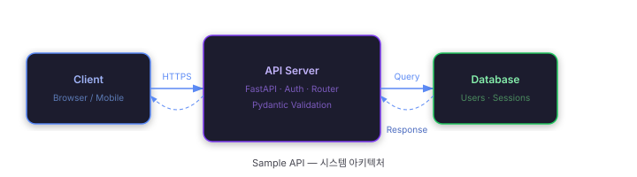

프로젝트 개요
Sample API 문서에 오신 것을 환영합니다. 사용자 관리와 인증을 위한 REST API입니다.

Sample API는 FastAPI로 구현된 REST API로, 사용자 등록·조회와 JWT 기반 인증을 제공합니다. 인메모리 저장소를 사용하므로 별도 DB 설정 없이 즉시 실행할 수 있습니다.
주요 기능
- 사용자 목록 조회 / 단일 조회 / 생성
- 이메일 + 비밀번호 기반 로그인 및 토큰 발급
- Bearer 토큰 인증
- 역할(role) 기반 필터링
기술 스택
| 항목 | 기술 | 버전 |
|---|---|---|
| 언어 | Python | 3.11+ |
| 프레임워크 | FastAPI | 0.115 |
| 유효성 검사 | Pydantic | v2 |
| 서버 | Uvicorn | 0.30 |
빠른 시작
5분 안에 API 서버를 실행하고 첫 요청을 보내보세요.
설치
pip install fastapi "uvicorn[standard]" "pydantic[email]"서버 실행
uvicorn app.main:app --reload서버가 시작되면 http://localhost:8000에서 접속할 수 있습니다.
Swagger UI는 http://localhost:8000/docs에서 확인 가능합니다.
첫 요청 해보기
먼저 로그인하여 토큰을 받고, 그 토큰으로 사용자 목록을 조회합니다.
1. 로그인
curl -X POST http://localhost:8000/auth/login \
-H "Content-Type: application/json" \
-d '{"email":"alice@example.com","password":"securePass123"}'2. 사용자 목록 조회
curl http://localhost:8000/users \
-H "Authorization: Bearer <발급받은_토큰>"alice@example.com과 bob@example.com 계정이 등록되어 있습니다.
사용자 목록 조회
등록된 모든 사용자를 반환합니다. 인증 토큰이 필요합니다.
요청
헤더
| 이름 | 타입 | 필수 | 설명 |
|---|---|---|---|
Authorization |
string | 필수 | Bearer {토큰} |
쿼리 파라미터
| 이름 | 타입 | 필수 | 설명 |
|---|---|---|---|
role |
string | 선택 | 역할로 필터링 — admin 또는 user |
응답
{
"users": [
{ "id": 1, "name": "Alice", "email": "alice@example.com", "role": "admin" },
{ "id": 2, "name": "Bob", "email": "bob@example.com", "role": "user" }
],
"total": 2
}{ "detail": "유효한 Bearer 토큰이 필요합니다." }cURL 예시
curl http://localhost:8000/users \
-H "Authorization: Bearer <token>"사용자 생성
새 사용자를 등록합니다. 이메일이 중복되면 409를 반환합니다.
요청
바디 application/json
| 필드 | 타입 | 필수 | 설명 |
|---|---|---|---|
name | string | 필수 | 사용자 이름 |
email | string | 필수 | 이메일 (유일) |
password | string | 필수 | 비밀번호 |
role | string | 선택 | admin | user (기본: user) |
응답
{ "id": 3, "name": "Charlie", "email": "charlie@example.com", "role": "user" }{ "detail": "이미 사용 중인 이메일입니다." }{ "detail": [{ "loc": ["body","email"], "msg": "value is not a valid email address" }] }cURL 예시
curl -X POST http://localhost:8000/users \
-H "Content-Type: application/json" \
-d '{"name":"Charlie","email":"charlie@example.com","password":"pass123"}'사용자 단일 조회
경로 파라미터로 지정한 ID에 해당하는 사용자를 반환합니다.
요청
경로 파라미터
| 이름 | 타입 | 필수 | 설명 |
|---|---|---|---|
id | integer | 필수 | 사용자 고유 ID |
헤더
| 이름 | 타입 | 필수 | 설명 |
|---|---|---|---|
Authorization | string | 필수 | Bearer {토큰} |
응답
{ "id": 1, "name": "Alice", "email": "alice@example.com", "role": "admin" }{ "detail": "ID 99에 해당하는 사용자를 찾을 수 없습니다." }cURL 예시
curl http://localhost:8000/users/1 \
-H "Authorization: Bearer <token>"로그인
이메일과 비밀번호로 인증하여 액세스 토큰을 발급받습니다.
요청
바디 application/json
| 필드 | 타입 | 필수 | 설명 |
|---|---|---|---|
email | string | 필수 | 등록된 이메일 |
password | string | 필수 | 비밀번호 |
응답
{
"access_token": "a3f1b2c4d5e6...",
"token_type": "bearer",
"expires_in": 3600
}{ "detail": "이메일 또는 비밀번호가 올바르지 않습니다." }cURL 예시
curl -X POST http://localhost:8000/auth/login \
-H "Content-Type: application/json" \
-d '{"email":"alice@example.com","password":"securePass123"}'이미지 삽입 예시
문서에 이미지를 삽입하는 세 가지 방법을 소개합니다.
방법 1 — 기본 img 태그
가장 단순한 방법입니다. src에 상대 경로를 지정합니다.
<img src="assets/architecture.svg"
alt="아키텍처 다이어그램"
class="doc-image" />방법 2 — figure + figcaption (캡션 포함)
캡션이 필요할 때 <figure>와 <figcaption>을 사용합니다.
<figure class="image-wrap">
<img src="assets/architecture.svg" alt="시스템 아키텍처 다이어그램" />
<figcaption>그림 1. Client → API Server → Database 흐름</figcaption>
</figure>방법 3 — SVG 인라인 삽입
SVG 파일 내용을 HTML에 직접 붙여넣으면 CSS로 색상을 제어하거나 크기를 자유롭게 조절할 수 있습니다. 파일 크기가 작은 아이콘·다이어그램에 적합합니다.
<!-- assets/icon.svg 내용을 그대로 붙여넣기 -->
<svg width="24" height="24" viewBox="0 0 24 24" fill="currentColor">
<path d="M12 2 ..."/>
</svg>assets 폴더 구조
이미지 파일은 docs/assets/ 폴더에 모아두면 관리가 편합니다.
docs/
├── index.html
├── style.css
├── app.js
└── assets/
├── architecture.svg ← 다이어그램
├── screenshot.png ← 스크린샷
└── logo.svg ← 로고